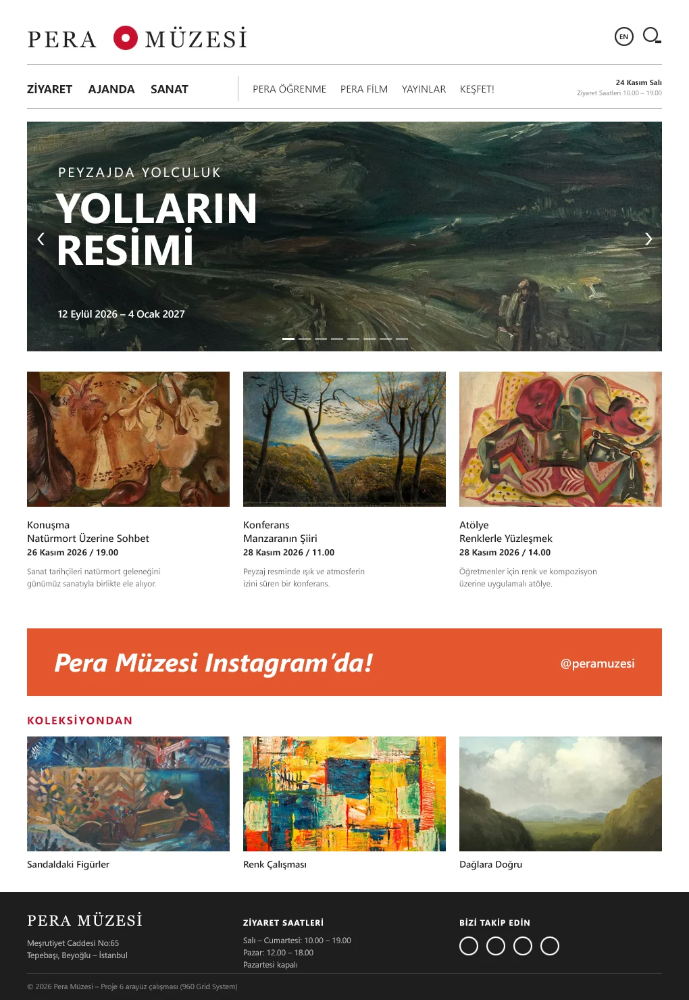
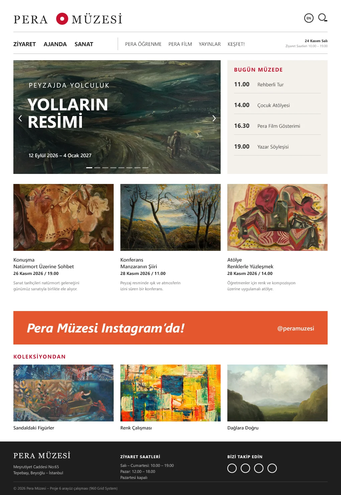
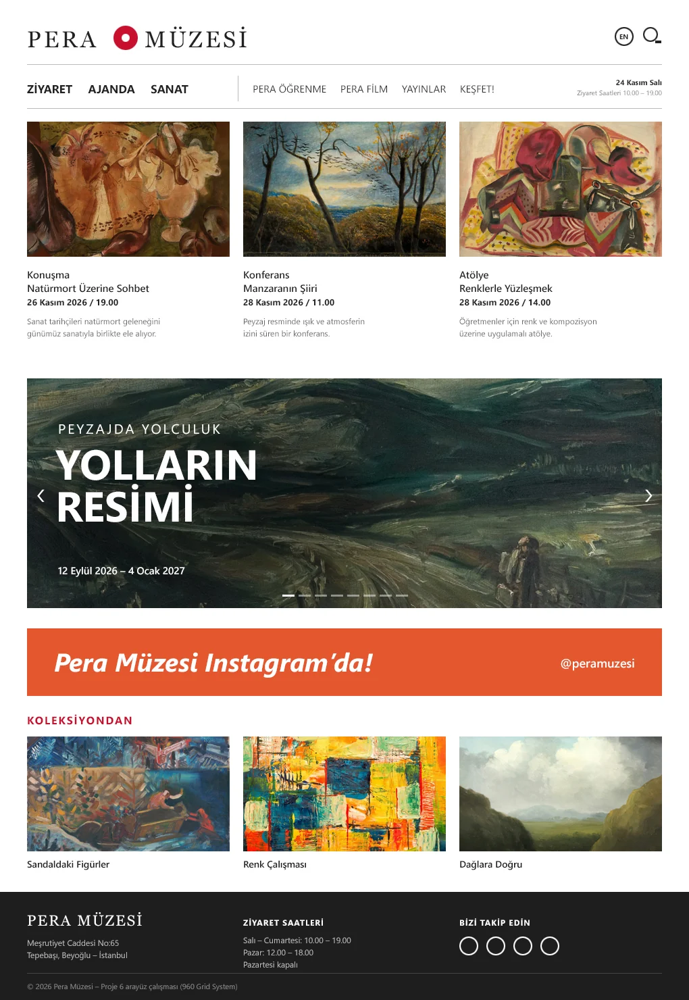

Arayüz Tasarımı
Pera Müzesi — Arayüz Tasarımı
Pera Müzesi ana sayfasını referans alarak 12 sütunlu grid üzerinde hazırladığım, üç farklı yerleşime sahip arayüz tasarımı.
Adobe Photoshop · Onur Can Orhan · Kasım 2026

Web Arayüzü Hazırlama
Pera Müzesi için 960 grid arayüz çalışması
Pera Müzesi ana sayfasını referans alarak Photoshop’ta bir arayüz tasarımı hazırladım. Taslak çizimden başlayıp 12 sütunlu 960.gs ızgarası üzerinde içerik hiyerarşisi ve alternatif yerleşimler çalıştım.
Nasıl hazırladım?
960_grid_12_col.psd şablonunu kullandım; taslağı 960_sketch_12_col üzerinde çizdim. Üst bilgi, menü, manşet, etkinlikler, sosyal bant, koleksiyon ve alt bilgiyi grupladım. Layer Comps ile Klasik, Kenar Çubuğu ve Etkinlikler Önce adlı üç yerleşimi kaydettim.
960.gs · 12 sütun · Taslak · Layer Comps · Üç alternatif yerleşim





Tasarım referansı: Pera Müzesi · 960.gs
Ortaya çıkan sonuç
Klasik, kenar çubuklu ve etkinlikleri öne alan üç yerleşim hazırladım. Aynı içerikle farklı hiyerarşiler kurarak menü, sergi ve etkinlik alanlarının ilişkisini karşılaştırdım.